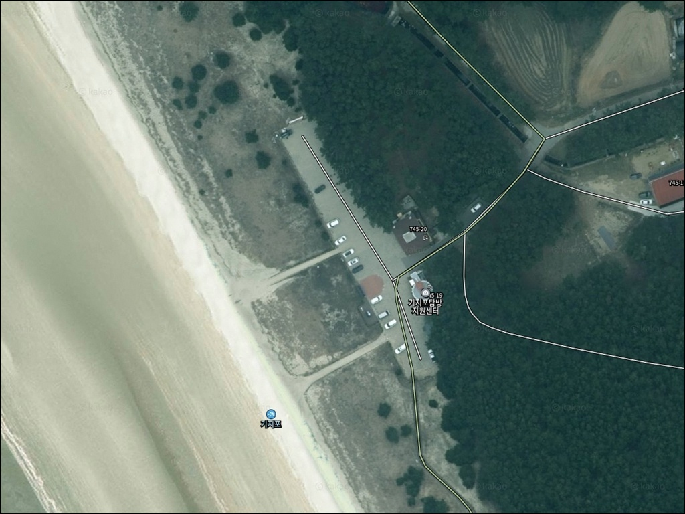
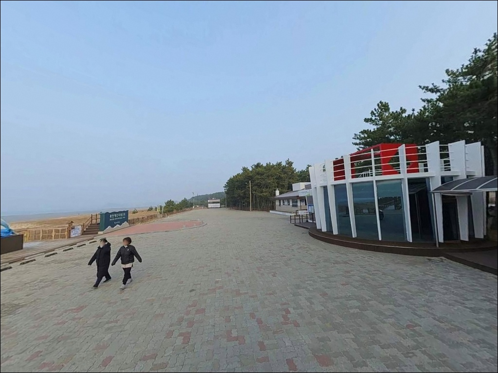
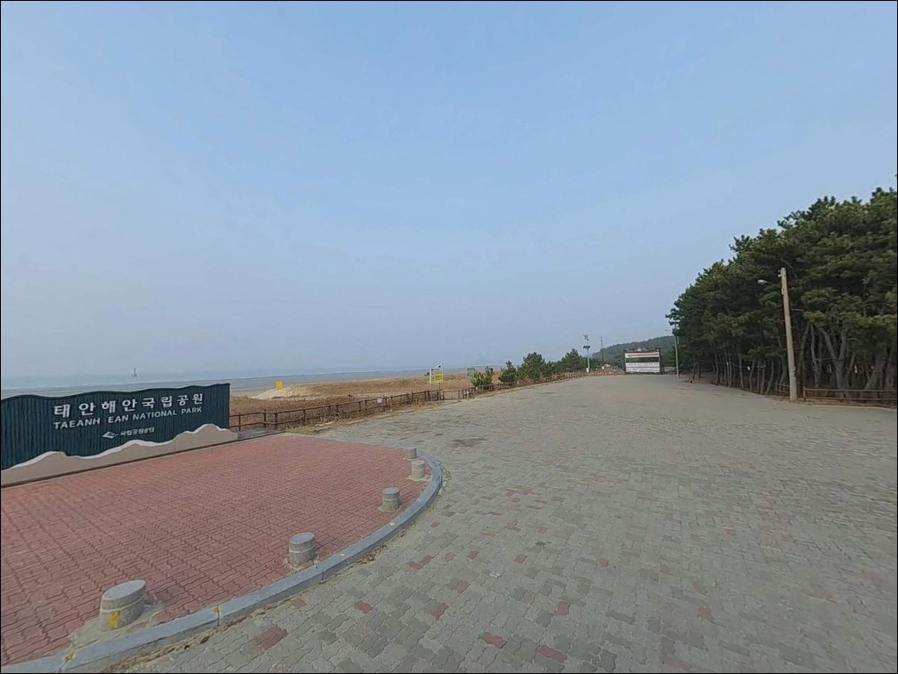
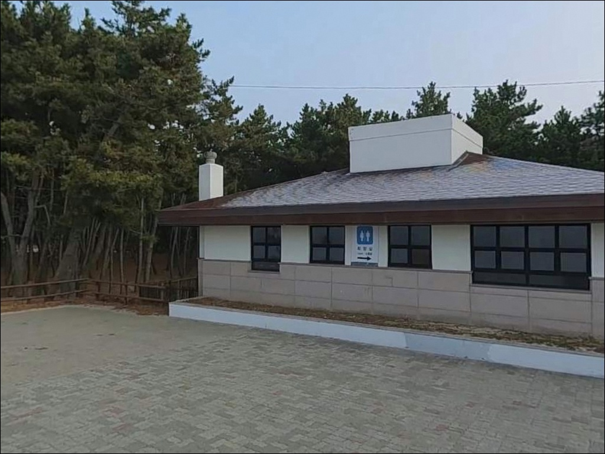
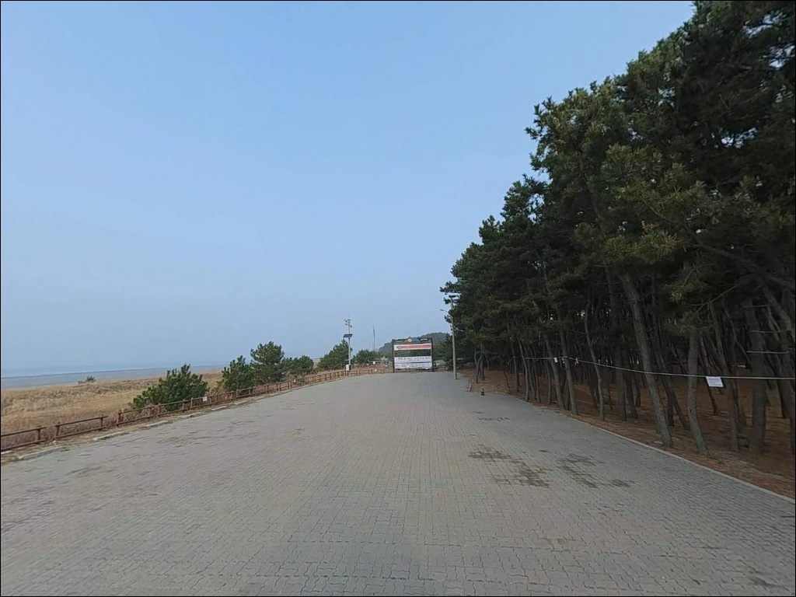
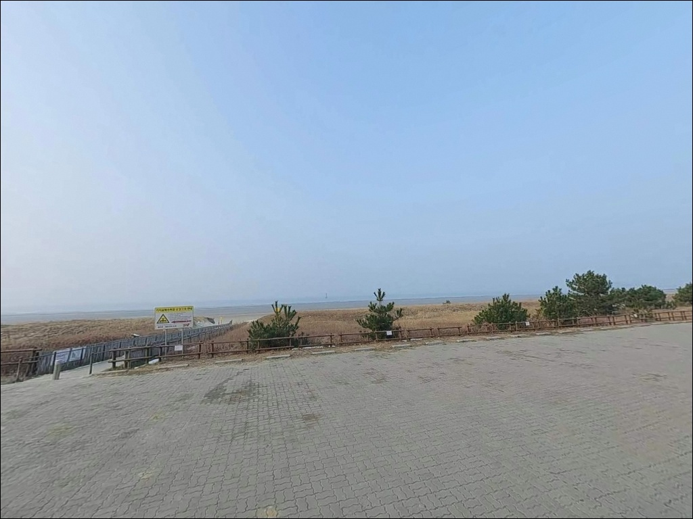
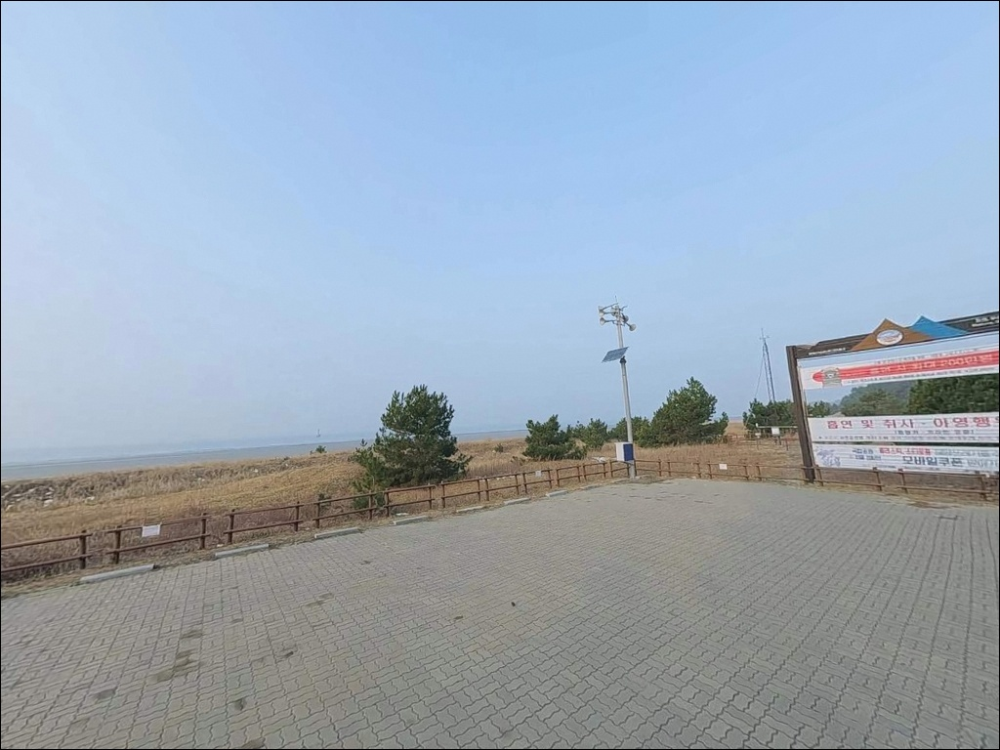
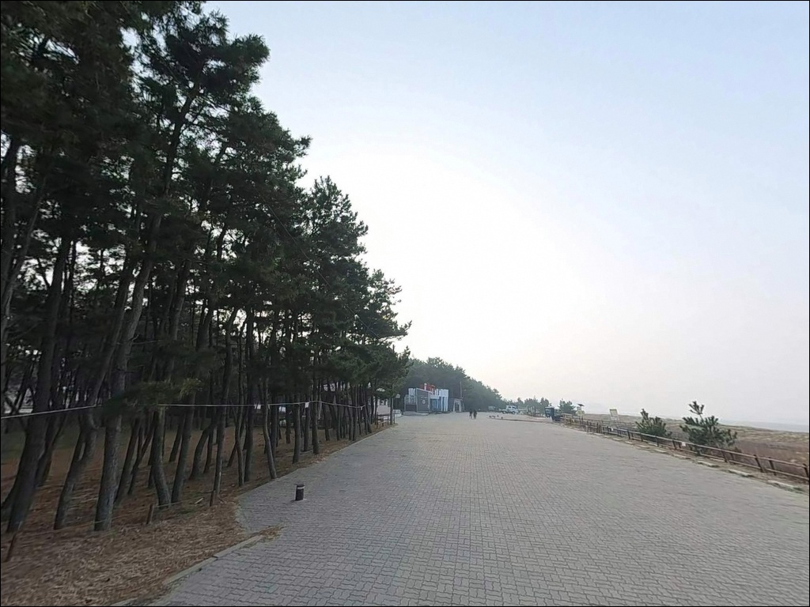
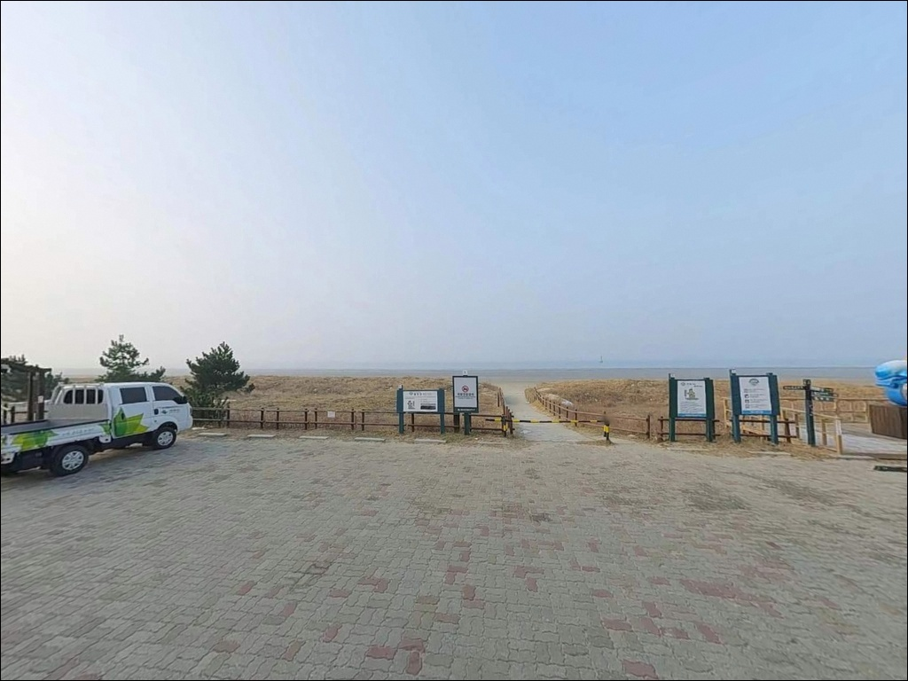

기지포해수욕장, 충남 태안군 안면도 해변 차박, 낚시 스팟
이 페이지에는 광고(제휴 링크 포함)가 있으며, 광고 링크를 통해 구매하면 운영자가 판매 수익 또는 수수료를 받을 수 있습니다. 포인트 사진: 카카오맵 스카이뷰·로드뷰. 이 페이지의 지도·사진 이미지는 카카오맵의 실제 서비스 이미지와 다를 수 있습니다.


포인트 안내
기지포해수욕장을 찾는 낚시인이
가장 자주 놓치는 판단은 물때입니다.
들물이 올라오기 전 자리를 잡으면
수심이 얕아 어떤 채비를 써도 바닥만 긁고,
썰물이 깊어진 뒤 도착하면 조류가 빠져
입질 자체가 사라지는 상황이 이어집니다.
이 글은 기지포해수욕장의 진입 환경, 낚시 지형 조건,
물때 활용 기준, 차박 여건에 집중합니다.
기지포해수욕장
충남 태안군 안면읍 창기리 560-27
길이 약 800m, 폭 200m의 완경사 사질 해변으로
방파제나 갯바위 없이 전면이 개방된
오픈 해변 구조입니다.
안면도 서해안 특유의 넓은 간조 갯벌과
큰 조수간만의 차가
이 포인트의 낚시 조건 전부를 결정합니다.

1. 진입 동선과 포인트 접근성
기지포해수욕장은 해안관광로에서
해변 안쪽으로 진입하는 구조입니다.
주요 해수욕장 진입로답게 포장도로로 이어져 있어
일반 승용차·SUV 기준 진입 자체에는
큰 어려움이 없는 편입니다.
다만 처음 찾는 경우 진입로 방향이
다소 헷갈릴 수 있으므로,
주소를 정확히 입력한 뒤 내비게이션을 따라
진입하는 것이 좋습니다.
해변 입구 쪽에 주차장이 조성되어 있으며
무료 이용이 가능한 것으로 확인됩니다.
성수기를 제외한 비수기·평일 방문이라면
주차 공간 확보에 무리가 없는 편입니다.
대형 차량이라면 진입 전에
현장 여건을 한 번 더 살피는 편이 안전합니다.
해변으로 내려가는 동선은
기지포탐방지원센터 방향 탐방로를 따라
진입하는 것이 기본입니다.
해변 뒤편 해안사구 구간은
국립공원 복원 구역으로 지정되어
출입이 제한되는 곳이 있으므로,
안내 표지판을 확인하며 이동하는 것이 매너입니다.

2. 차박 환경과 야간 체류 여건
기지포해수욕장 주차장은 해변과 인접해 있어
차박 기반으로 활용하려는 시도 자체는
가능한 구조입니다.
성수기를 피한 봄·가을 평일이라면
인근 펜션·민박 이용객이 줄어드는 시간대 이후
비교적 한적한 분위기를 기대해볼 수 있습니다.
다만 기지포해수욕장은
태안해안국립공원 구역 내 해변입니다.
국립공원 내에서는 지정된 구역 외의
야영과 취사가 원칙적으로 제한되므로,
차박 형태로 하룻밤 머물 계획이라면
출발 전 태안해안국립공원 안내소에
허용 여부를 먼저 확인하는 것이 기본 준비입니다.
확인 없이 진입했다가 현장에서
제지를 받는 상황이 생길 수 있습니다.
야간 조명은 제한적인 편으로 보입니다.
해변 특성상 가로등 수가 많지 않고,
기상에 따라 바람과 파도 소음이
강해지는 날이 있습니다.
야간 낚시를 겸할 계획이라면
헤드랜턴은 필수이며,
어두운 해변에서의 이동에 주의가 필요합니다.


3. 주변 편의시설 및 인프라 현황
기지포해수욕장 현장에는
화장실이 확인됩니다.
기지포탐방지원센터도 해변 인근에 위치하며
탐방 편의시설이 일부 운영됩니다.
샤워장·식수대 등 부가 시설은
운영 시기와 현황이 변동될 수 있으므로,
방문 전 태안군(041-670-2691)에
확인하는 편이 확실합니다.
반경 3km 이내 창기리 일대에
식당이 있는 것으로 알려져 있습니다.
꽃지해수욕장 방면으로 이동하면
편의 인프라 접근성이 좋아집니다.
편의점·마트가 현장 바로 옆에 있다고
단정하기 어려우므로,
낚시 소품·식재료·얼음은
출발 전 넉넉히 챙겨 가는 것이
현실적인 준비 방식입니다.

4. 방문 전 반드시 챙겨야 할 준비사항
기지포해수욕장 방문 전
가장 먼저 확인할 것은 물때입니다.
바다타임에서 안면읍 기준 물때를 확인하고,
들물이 올라오는 시간대를 기준으로
출발 시각을 잡는 것이 기본 전략입니다.
조수간만의 차가 큰 서해 특성상,
간조 전후로 수심이 빠져나가
원투 채비를 멀리 던져도
바닥을 긁는 상황이 이어집니다.
서해안 기상은 변화가 빠른 편이므로
기상청 예보를 출발 전날과
당일 아침에 각각 확인하는 것이 좋습니다.
바람이 강해지는 날은
원투 캐스팅 거리 자체가 줄어들어
포인트 공략 효율이 떨어집니다.
야간 낚시를 병행할 계획이라면
헤드랜턴·구명조끼·여분 채비를
반드시 챙겨야 합니다.
해수욕장 주변 해안사구 구간은
국립공원 복원 구역으로 지정된 곳이 있습니다.
낚시 자리를 잡을 때 안내 표지판을 확인하고
지정된 탐방로와 해변 구간을
이용하는 것이 기본 매너입니다.
성수기에는 해수욕객이 많은 시간대에
원투 캐스팅은 자제하는 것이 맞습니다.

5. 지형이 만드는 낚시 여건, 들물이 전부입니다
기지포해수욕장의 핵심 특성은
경사가 완만한 순수 백사장 구조입니다.
방파제나 갯바위가 없는 오픈 해변이라,
수중 구조물에 기대는 낚시보다는
해저 모래 바닥을 탐색하는 방식이
이 지형에 맞습니다.
근거리 수심은 얕은 편이며,
일정 거리 이상 캐스팅해야
수심이 확보되는 구조입니다.
들물이란 간조 이후 밀물이 밀려들어오는
시간대로, 서해안 해변 낚시에서
입질이 살아나는 핵심 타이밍입니다.
간조 이후 조류가 밀려드는 초들물부터
만조 전후 구간이 낚시 효율이
가장 높아지는 시간대입니다.
썰물이 강하게 빠지는 구간에는
수심이 빠르게 얕아지고 조류가 불안정해져
채비 운영 자체가 어려워집니다.
전면 해상에는 내파수도, 나치도 등
다수의 섬이 산재한 구조로,
섬 사이 물길에 따라
일정한 조류 흐름이 생길 가능성이 있습니다.
기지포해수욕장은 완경사 백사장 지형 특성상
들물 타이밍을 맞추는 것이
조과와 직결되는 포인트입니다.
최신 조황은 출조 전에
"기지포해수욕장 낚시", "안면도 해변 원투낚시"로
직접 검색해 확인해 두시기 바랍니다.


6. 포인트에 어울리는 낚시 스타일
이 포인트에서 가장 잘 맞는 방식은
원투낚시입니다.
원투낚시란 무거운 봉돌을 달아
채비를 멀리 던져 해저 바닥을 공략하는
낚시 방식으로,
완경사 모래 바닥의 해변에서
가장 기본이 되는 스타일입니다.
들물 초입부터 만조 전후 구간에
캐스팅 거리를 충분히 확보하면,
돌가자미·붕장어 등
모래 바닥 선호 어종을
기대해볼 수 있는 구조입니다.
파도가 잔잔하고 바람이 약한 날에는
서프 루어낚시도 시도해볼 수 있습니다.
인근 서해안 해변에서
농어를 대상으로 한 루어 접근이
이루어지는 패턴이 있어,
이 해변에서도 비슷한 방식을
적용해볼 여지는 있습니다.
전면 서해 개방 구조에서
원거리 캐스팅이 유효한 자리를 찾는 것이
이 포인트 공략의 핵심입니다.
방파제나 갯바위 같은 구조물이 없으므로
특정 어종을 확정적으로 기대하기보다는
탐색형 운영이 현실적입니다.
해변 전체가 균일한 지형이라
특정 포인트가 명확히 드러나지 않는 편입니다.
들물 흐름에 따라 물골이 생기는 구간을 파악하고,
그 방향으로 채비를 보내면서 서서히 탐색하는 방식이
이 포인트 운영의 기본 전략입니다.
봄·가을 들물 시즌에 서해 백사장 포인트
활성도가 올라가는 경향이 있습니다.

7. 대안 포인트와 플랜 B 동선
기지포해수욕장 조류 여건이 맞지 않거나
해변 상황이 여의치 않을 때,
가장 먼저 이동할 수 있는 대안은
꽃지해수욕장 방파제입니다.
기지포에서 직선 약 3~4km 거리에 위치하며,
방파제 구조로 수심과 포인트 선정이
상대적으로 명확한 편입니다.
방파제 원투낚시로 돌가자미 조황이 알려진 곳이며,
차량 진입도 가능한 구조입니다.
백사장항도 이동 후보입니다.
기지포에서 5~6km 거리에 있는 항구로,
항구 기반의 낚시 접근이 가능합니다.
방포항은 반경 10km 이내에 위치하며
원투낚시 포인트로 알려져 있고,
차박을 겸한 방문 후기가 다수 확인되는 곳입니다.
기지포를 기점으로 두고
꽃지 방파제를 병행 탐색하는 동선이
이 권역에서 가장 효율적인 이동 경로입니다.
차박 대안으로는 몽산포 일대
국립공원 운영 공인 야영장을 검토해볼 수 있습니다.
공식 캠핑 인프라를 원한다면
이 방면이 현실적인 대안이 됩니다.
삼봉해수욕장 인근 주차 구간도
이동 후보에 포함할 수 있지만,
해당 구역도 국립공원 관할일 가능성이 있으므로
이동 전 규정 확인이 먼저입니다.

들물 하나가 기지포 해변 낚시의
시작과 끝을 결정합니다
원투낚시를 즐기는 낚시인이라면
기지포해수욕장의 완경사 백사장 구조는
나쁘지 않은 선택입니다.
수중 구조물이 없는 깨끗한 모래 바닥이라
밑걸림 걱정 없이 채비를 멀리 보낼 수 있고,
들물 흐름에 따른 탐색형 운영이
이 포인트에 가장 잘 맞는 스타일입니다.
다만 해변 낚시 조건이 물때에
지나치게 집중되는 구조라,
물때를 놓치면 긴 백사장만 걷다 오는
상황이 됩니다.
바다타임 물때 확인, 국립공원 야영 규정 사전 문의,
식재료·낚시 소품 자급 준비,
이 세 가지를 갖추고 들어가면
기지포 해변이 달라 보일 것입니다.
들물이 올라오는 시간대에
원투 채비를 멀리 보내고,
낚시를 마친 뒤 안면도 서해안에서
하룻밤을 보낼 수 있다면,
차박 낚시 여행지로서
기지포의 가치는 충분합니다.